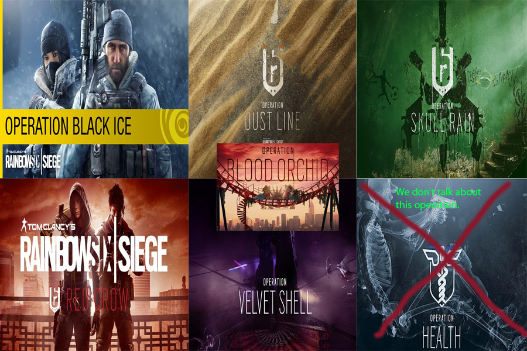
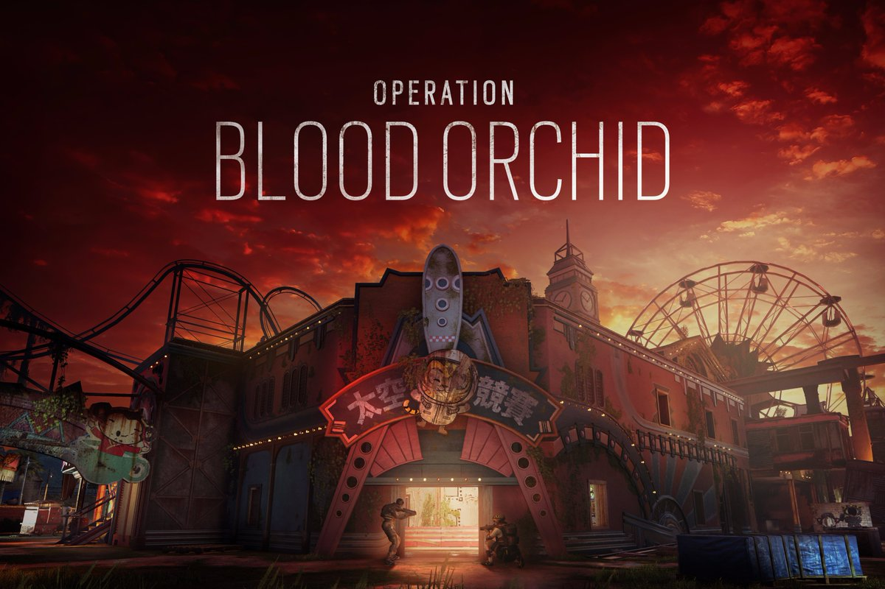
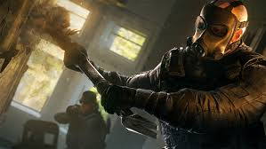
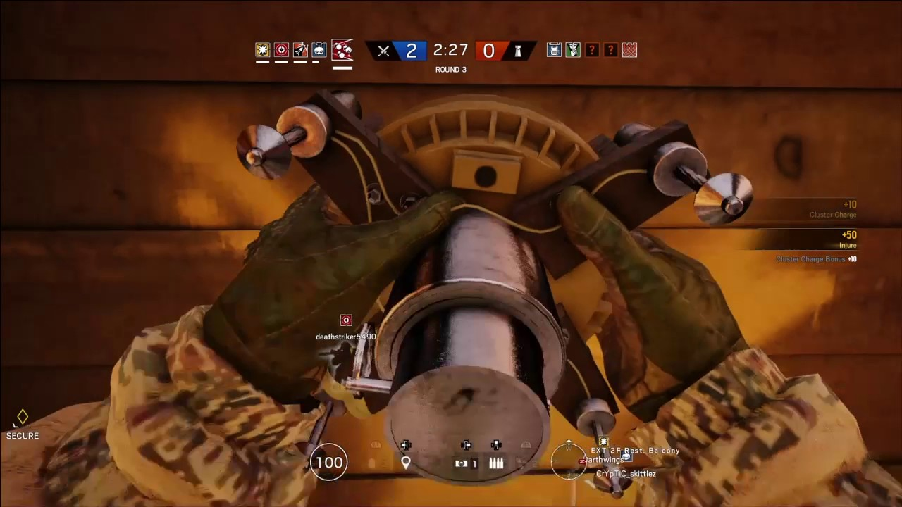
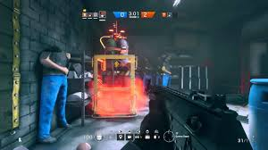
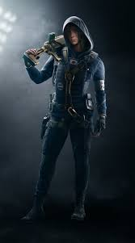
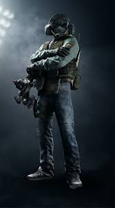
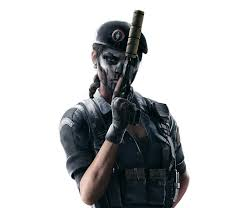
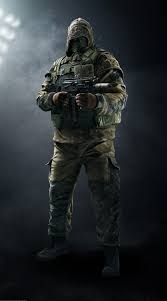
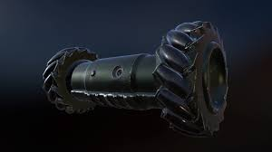

Home
Rainbow Six Siege is now one of the most popular games on the market. Just a few weeks ago the game hit
20,000,000 players.
Ubisoft has been "invested" in adding dlc to the game. When the game first released it was in a
state of disarray and disaster. Ubisoft had to rewrite it's netcode from scratch to get rid of hackers. They also purchased battleye(antihacking software) to make sure players dont hack.
FunFact: When Battleye bans someone, it shows their username on every players screen as an act of shame.

Operation Black Ice: Added Buck (attacker),Frost (defender), yacht(map) and some bug fixes.
Dust line:Added Blackbeard(attacker), Valkyrie(defender),Border(map) and more bug fixes.
Skull Rain: Capitao(attacker), Caveira(defender), Favella(map) and server fix/battleye inclusion.
Red Crow: Hibana(attacker), Echo(defender),Skyscraper(map) and various buffs and nerfs(#nerfbeard).
Velvet Shell: Jackal(attacker), Mira(defender) and Coastline(Map)
Blood Orchid:Did so much. Was delayed for 3 months. Was met with excitement by the whole community.
Operation Health: Reason why blood orchid was delayed for so long. No improvement whatsoever.
The bibliography
Tom Clancy's Rainbow Six® Siege | Ubisoft® (US), rainbow6.ubisoft.com/siege/en-us/home/index.aspx.
“Rainbow 6 Siege Memes.” Jk I've Just Been Hella Slackin...but... - Rainbow 6 Siege Memes, www.facebook.com/rb6memes/photos/a.494685087387386.1073741828.487670414755520/727382714117621/?type=3.
Tom Clancy's Rainbow Six® Siege | Operator CAVEIRA | Ubisoft® (US), rainbow6.ubisoft.com/siege/en-us/game-info/operator/caveira.aspx.
Tom Clancy's Rainbow Six® Siege | Operator HIBANA | Ubisoft® (US), rainbow6.ubisoft.com/siege/en-us/game-info/operator/hibana.aspx.
Tom Clancy's Rainbow Six® Siege | Operator KAPKAN | Ubisoft® (US), rainbow6.ubisoft.com/siege/en-us/game-info/operator/kapkan.aspx.
Tom Clancy's Rainbow Six® Siege | Operator JÄGER | Ubisoft® (US), rainbow6.ubisoft.com/siege/en-us/game-info/operator/jager.aspx.
Tom Clancy's Rainbow Six Siege | Operation Blood Orchid | Ubisoft (US), rainbow6.ubisoft.com/siege/en-us/updates/bloodorchid/index.aspx.
“Drone.” Rainbow Six Wiki, rainbowsix.wikia.com/wiki/Drone.
“Bomb.” Rainbow Six Wiki, rainbowsix.wikia.com/wiki/Bomb.
"DerBlaue PowerRanger - YouTube Gaming.” YouTube, YouTube, gaming.youtube.com/channel/UCaypJHunMxG_idmQlxSz1BA.
Specialist, Anne Lewis | Communications. “Rainbow Six Siege – Meet the Operators.” UbiBlog UK - Ubisoft®, 25 Nov. 2015, blog.ubi.com/en-GB/rainbow-six-siege-operator-system/.
http://imgur.com/gallery/M88jZ
https://www.favicon-generator.org/
Operation Blood Orchid
Operation Blood Orchid

What will Operation Orchid be adding to Rainbow 6 Seige
Operation Blood Orchid will be adding a new Hong Kong map based upon a theme park, many bug fixes, new weapons and abilities, and 3 new operators. These 3 new operators are Ying, Lesion, and Ela. Ubisoft is also taking away the maps Yacht and Favela for fixing.
How will this be changing the game as a whole
The new operators bring new abilities and new guns. For the new operator Ela brings new grzmot mines that can be thrown onto walls and floors. They are proximity mines that will explode when an enemy walks near. The new gun Ela brings are the Scorpion EV03 A1, the DP-12 Double Barrel, and the Ragun PR-15. The new operator Ying brings the new candela. It can be thrown into rooms or rolled under doors and when the grenade pops, it shoots out a number of flashbangs in random directions. The new guns Ying brings are the SIX12, the T-95LSW, and the Q-929. The last new operator Lesion brings gu mines that are poison needles that stick to the floor or walls and when an enemy steps on it, it causes the enemy to have distorted vision, a green swampy filter, and does damage over time to the enemy. Lesion brings the new gun the T-5 SMG. With the new map Theme Park every player will have to learn every part of the map. This will include spawn points, objective points, and the layout of the map.
After many months of delaying Operation Blood Orchid will be coming out on September 5th.
Siege Playstyle
In siege there are 2 teams that switch between attack and defend every round. There is the blue team and the orange team. There are 3 types of gamemodes, secure the objective, bomb, and the hostage. In all gamemodes if all players on one team dies, then they lose.
Secure the Objective

In secure the objective, the objective is a room that the attacking team has to secure the objective by staying inside the objective. Defenders can prevent attackers from securing the objective by staying inside the objective. When both an attacker and a defender are in the objective, it will become contested which means the progress bar for securing the objective will not move.
Hostage

For hostage, the attacking team has to break into the room that the hostage is in, grab the hostage, and make it to outside of the building to one of the many flares. If either team kills the hostage, the team that killed the hostage loses the round.
Bomb

For bomb, there are 2 bomb sites. One site is bomb A and the other site is bomb B. The attackers have to get into range of one of the bombs and place a defuser. Once the defuser is placed, then the defenders have to try to destroy the defuser by hitting it with their guns. The defuser cannot be destroyed by grenades or bullets.
Attackers

On the attacking team, the goal is to either completely eliminate the enemy team, secure the objective, defuse the bomb, or secure the hostage. The composition of your team matters while playing on the attacking side. What this means is that certain operators are always needed, such as Hibana and Thermite who can break through reinforced walls and Thatcher that can remove all electronics that would be blocking the Hibana X-KAIROS and Thermite Exothermic Charges from blowing through the wall. There are many other combinations of attacking operators that work well together.
Defenders

On the defending team, the goal is to either completely eliminate the enemy team or prevent the attackers from taking objectives until the time runs out. The composition of your team also matters while playing on the defending side. For example Mute and Jäger can prevent Hibana and Thermite from breaking through reinforced walls, prevent Fuze from activating his Cluster Charge and shooting many bombs into targeted rooms.
Roaming

Roaming in Rainbow Six Siege is the act of leaving the objective while on the defending team and walking around trying to slow the attacking team down while getting a few kills. As a roamer, the only goal is to slow the attacking team as much as possible and possibly get 1 or 2 kills. One of the most notorious romers is Caveira, also known as Cav. Caveira is so well known because of her ability "Silent Step" and "Interrogation" because silent step allows her to move without making any noise and interrogation allows her to approach a downed enemy and "interrogate" them by pressing F. When Caveira interrogates an enemy, she kills them and Caveira's whole team gets real time locations of where all of the enemy team is.
Lurking

Despite the common belief that roaming is the samething as lurking, it is not. Lurking is taking a position where the enemy team would not expect you to be in. Then when the enemy team passes by, the lurker would get a late flank. This is much different than roaming because one is actively hunting the enemy team, while lurking is staying in one spot until the enemy passes by so that the lurker gets a late flank. One of the most popular roamers is Kapkan. Kapkan is such a popular lurker because he can place his "Entry Denial Devices" to guard the objective while Kapkan is doing his late flank. His "Entry Denial Device" is a small explosive placed on door and have a red laser that goes across. When someone steps over the red laser, it triggers the trap and causes a small explosion killing the player that stepped on it.
Preparation Phase

For preparation phase, the defending team must reinforce walls and place equipment down in order to prepare for the attacking team to attack the objective. The defending team also has to try to destroy all drones to prevent the attacking team from getting to much information. For the attacking team, during preparation phase their goal is to use drones to find the objective location and ID has many enemy operators as possible while getting their drone into a position where they can get information.

 Every operator however can breach through destructible surfaces. Operators can use their own weapons/grenades to penetrate the wall and destroy it. If they melee the wall enough it can also break. And finally most operators with access to a breach charge can just blow a hole open.
Every operator however can breach through destructible surfaces. Operators can use their own weapons/grenades to penetrate the wall and destroy it. If they melee the wall enough it can also break. And finally most operators with access to a breach charge can just blow a hole open.
 Every first person shooter revolves around the gunfights. Every gun type excluding nonlethal pistols and shotguns benefit from the one shot headshot mechanic. Basically if you get shot in the head you are dead. Assault rifles, Marksman rifles,Light machine guns's,shotguns and pistols. The defenders get smg's, carbines, shotguns and machine pistols/pistols. Every weapon has recoil and damage fall off. A main component in recoil is how fast the gun shoots. The faster it shoots the higher recoil it has. The damage drop-off depends on the weapon type and how much damage a certain weapon does. A marksman rifle for example has a higher drop-off than an assault rifle because it does higher damage from a farther distance.
Every first person shooter revolves around the gunfights. Every gun type excluding nonlethal pistols and shotguns benefit from the one shot headshot mechanic. Basically if you get shot in the head you are dead. Assault rifles, Marksman rifles,Light machine guns's,shotguns and pistols. The defenders get smg's, carbines, shotguns and machine pistols/pistols. Every weapon has recoil and damage fall off. A main component in recoil is how fast the gun shoots. The faster it shoots the higher recoil it has. The damage drop-off depends on the weapon type and how much damage a certain weapon does. A marksman rifle for example has a higher drop-off than an assault rifle because it does higher damage from a farther distance.